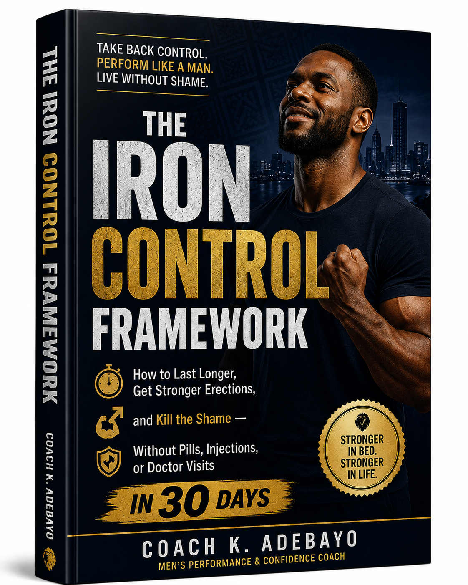
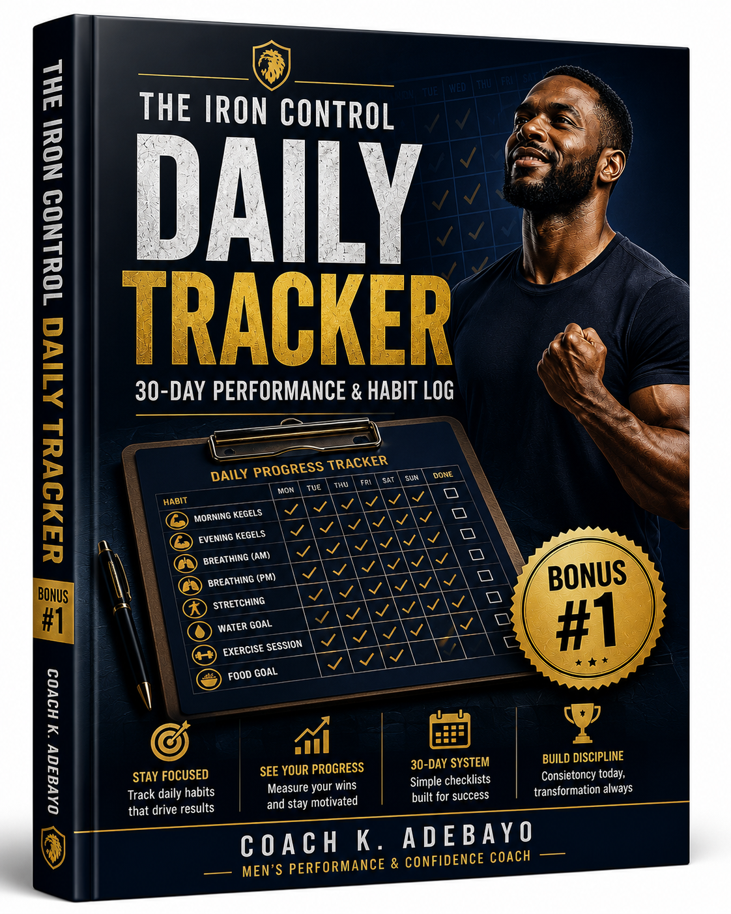
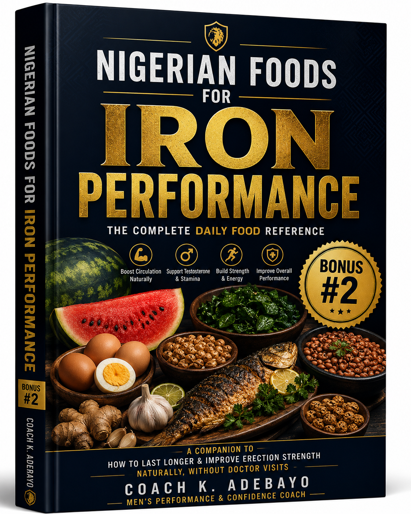

If you are finishing in under two minutes — or struggling to keep a strong erection — and you have tried everything you can find online only to still feel like something is fundamentally broken inside you — read every word on this page.
Because I know that feeling.
You have tried the supplements. The ones sold on Instagram with photos of muscular men and promises that vanish the moment you open the sachet. You spent money. Nothing changed. Or it worked once, then stopped. Or it never worked at all.
You have tried the exercises you found on YouTube. You watched five videos, did them for three days, got distracted, and quietly gave up — because nothing was happening fast enough.
Maybe you tried alcohol. Thought it would relax you. Instead it made things worse. Made the body slower. Made the mind louder.
You have tried overthinking your way out of it. Before it even starts, you are already calculating. Already watching yourself from the outside. Already bracing for the shame. That kind of thinking does not help. It guarantees failure.
You have told yourself it is stress. Work is hard. Bills are heavy. Life in Nigeria is not easy. And that is true. But you cannot hide behind that forever when the woman beside you is pulling away.
She has not said anything. That is almost worse. The silence. The way she rolls over. The way intimacy has quietly become something that creates more distance than it closes.
You lie there afterward — not with satisfaction. With shame. With that voice in your head that says maybe this is just how you are. Maybe something is wrong with you. Maybe this is your life now.
That voice is a liar. But I know how loud it gets.
Because I carried that shame too. For years. In silence. Without telling a single person.
"I know. Because I carried it too."
My name is Kayode Adebayo.
I am not a doctor. I am not a pharmacist. I have no certificate to hang on a wall. I am just a man from Ibadan who spent seven years inside this problem — quietly, desperately, and alone.
I was married at 29. My wife, Shade, was everything. We were happy in every other way. Good home. Jobs that paid. Family that loved us. But the bedroom became a war zone in my own head. A place I started to dread.
The first time it happened — finishing too fast, not being able to maintain strength — I told myself it was the stress of a new marriage. Adjustment. I would be fine.
I was not fine.
Six months in, I was spending money I did not have on supplements from small shops in Dugbe Market. Sachets with names I could not pronounce. I took them faithfully. Some made me feel warm for a few hours. Then nothing. Back to square one.
I went online and found videos, forums, men sharing their "solutions." I tried cold showers. I tried specific foods. I tried mental tricks I read about on foreign websites that had nothing to do with my life, my stress, my reality as a Nigerian man carrying the weight of everything on his shoulders every single day.
I even visited a clinic — once. The doctor barely looked at me. He asked three questions. Prescribed a tablet. Said I was fine. The tablet worked the first night. The second night, it gave me a headache. The third night, I did not dare try.
Not one person — not the doctor, not the supplement sellers, not a single video — ever asked me why it kept coming back. They all sold me solutions to symptoms. Nobody looked at the root.
The worst part was not the performance itself. It was what it was doing to Shade. I could see her trying not to show her frustration. I could feel the distance growing. Intimacy — something that should pull two people together — was quietly pushing us apart.
I was failing my wife. Not at work. Not as a provider. In the one place where no man wants to fail.
Everything changed at a men's wellness gathering in Abeokuta.
It was one of those quiet, old-style gatherings — the kind where older men from the community come together to discuss health, family, and life. My uncle had invited me. He said it would be good for me. I went expecting nothing.
There were about thirty men there, ranging from their twenties to their seventies. And among them was an older man — perhaps in his late sixties — named Baba Olatunji. He was a retired physical educator and traditional wellness researcher who had spent decades studying how the male body responds to stress, food, and lifestyle in the Nigerian context.
At some point during the gathering, the conversation turned to intimacy. Men began to speak — carefully at first, then more openly. And as I sat there in silence, Baba Olatunji looked directly at me across the room. Not with pity. With recognition.
He had seen this before. Many times.
I looked away. I felt my face go hot. In that moment, surrounded by men I barely knew, I had never felt more exposed in my life.
I have never been more ashamed in my life.
After the gathering, Baba Olatunji found me outside. He did not make a scene. He stood beside me quietly for a moment, looking at the street.
Then he said five words.
"You are not broken, son." — Baba Olatunji
I do not know why those five words hit me the way they did. But I stood there on the street in Abeokuta and I cried. Not small tears. The kind of crying a man does when he has been holding something too heavy for too long.
Baba Olatunji waited. He did not rush me. When I was done, he spoke.
I had never heard it said that way. So plainly. So accurately.
The Big Idea — and why everything you have tried has failed:
Your body has a natural control system. When that system is under chronic stress — financial pressure, poor sleep, bad food, overthinking — it adapts. It learns dysfunction as its new normal. The muscles weaken from disuse. The blood vessels constrict from poor diet and inactivity. The nervous system fires in fear patterns instead of pleasure patterns.
When you take a supplement, it forces an artificial override. It works once, maybe twice. Then your body returns to its adapted state — because the environment that created the problem was never fixed.
That is why it keeps coming back. It is not a permanent condition. It is a learned pattern. And learned patterns can be unlearned — with the right system, applied consistently, over thirty days.
The problem is not your body. The problem is what your body has adapted to.
I sat with that for a long time.
Seven years. That is how long I had been treating the symptom. Seven years of supplements, tablets, tricks, and shame. And it took one man, on a street in Abeokuta, to tell me what was actually happening.
Baba Olatunji spent the next two hours walking me through a method. Not complicated. Not expensive. Not something that required a doctor or a pharmacy or a foreign website. It used the body's own mechanisms — specific muscle training, local Nigerian foods, breathing patterns, and mental retraining — done in a specific order, daily, over thirty days.
It took less than fifteen minutes a day. I could do it at home. Nobody had to know.
I want to be honest with you.
Day 1 — I did the exercises. Ate better. Slept earlier. Nothing happened. I told myself to be patient.
Day 2 — Same. I noticed I felt slightly calmer. But no dramatic change. I kept going.
Day 3 — My body was sore in places I had never felt before. That told me the right muscles were being activated for the first time. Still no visible improvement in performance. I nearly quit.
Day 4 — I almost stopped. The voice in my head said this was another thing that would not work. But I remembered Baba Olatunji's words. Give it thirty days. I kept going.
Something shifted.
Not dramatically. Not the way supplements fake it. Subtly. A different kind of energy in the morning. A calmness I had not felt in years when I thought about intimacy instead of the usual wave of dread.
Something was waking up. I could feel it.
By Day 7, I noticed my confidence score — something I had been tracking daily — had climbed from a 3 to a 6. By Day 10, I was sleeping better than I had in years.
By Day 14, the improvement in the bedroom was undeniable. Not perfect — but real. Control I had not had before. Strength that lasted. A body that was responding differently.
And then on Day 18 — the detail that still gets me — I woke up and realised I had not thought about my performance at all the night before. For the first time in seven years, I had simply been present. I had not monitored. I had not calculated. I had not braced for failure.
I had just been there.
"For someone who had spent seven years monitoring every single session with fear — forgetting to monitor was the proof that something had genuinely changed."
But the real test was yet to come.
It was a Friday. Week three of the system.
Shade reached for me in the dark. The old version of me would have tensed. Would have started calculating. Would have already half-given up before it began.
Instead, I breathed. Slowly. The way Baba Olatunji had taught me. I relaxed the muscles instead of tightening them. I stayed present instead of monitoring.
I lasted longer than I had in seven years of marriage.
Not by a little. By a distance that made both of us lie there afterward in silence — the good kind of silence. The kind that does not need words.
Shade held my face in her hands. She looked at me the way she had not looked at me in a long time. And she said nothing. She just held me.
I cried. Not from shame. From relief. From the weight of seven years finally lifting off my shoulders.
"She held me like I had come back. Like something that had been missing had finally returned. I had not realised how far I had gone until that moment brought me home."
I am a private man. I was not going to share this.
But three weeks after I completed the thirty days, I was having a beer with my friend Tunde — a man I have known since secondary school. He seemed down. I asked what was wrong. He told me, reluctantly, that he was going through the same thing I had been through for seven years.
I told him everything.
He tried the system. Three weeks later, he sent me a voice note at 11pm. He was laughing. He said I had saved his marriage.
Then Tunde told his cousin in Abuja. The cousin told his gym partner. A WhatsApp message went out in a men's group. Voice notes started circulating. Within two months, I had men reaching out to me from Lagos, Port Harcourt, Kano, Enugu — asking for the same thing.
Same system. Same results. Again and again and again.
"I was embarrassed to even ask about this. But after 3 weeks of following the exercises and the breathing, I noticed a real difference. My wife commented that something had changed. I did not tell her what. I just smiled. This system is the real deal — no big grammar, just clear steps that actually work."
"I have tried many things online. Most were scams. This one is different. The food section alone changed how I eat. After 30 days, my energy and control both improved in ways I cannot fully explain. Very practical. Very Nigerian. No foreign advice that does not apply to my life."
"Chapter 2 on stress was an eye-opener. I did not realise how much my work pressure was directly affecting my performance. The mindset section helped me separate stress from bedroom time. The 30-day plan is what made everything click. I am on day 47 now and still going."
"I thought this was just how I was built. I thought some men just do not last long and that is their fate. Reading this changed everything I believed about myself. The exercises are simple. The food advice is food I actually eat. And the results came faster than I expected."
"Eight years. I am not exaggerating. Eight years of this problem. I had accepted it. My marriage was suffering and I had stopped trying. This guide reminded me that my body is not broken — it just needed the right system. By week three, my wife noticed. By week four, she asked what I had done differently. I told her I had made some lifestyle changes. She smiled and said, 'Keep doing them.'"
"My father had this problem. My older brother has this problem. I thought it was genetic and there was nothing I could do. This guide showed me that it is not in the blood — it is in the lifestyle, the stress, the food, and the muscles nobody ever trained. I am proof that it can change."
Same system. Same exercises. Same Nigerian foods. Same method. Same results.
After too many men reached out to me, I went back to Baba Olatunji in Abeokuta.
I told him what had happened. I told him about Tunde. About the messages from Kano and Enugu. About men I had never met sending me voice notes at midnight saying their marriages were healing.
He laughed. Not a surprised laugh. The laugh of a man who already knew.
I asked his permission to document everything he had taught me. To write it down properly. To make it available to men who would never find their way to a gathering in Abeokuta.
He was quiet for a moment. Then he said:

Everything Baba Olatunji taught me — documented, verified, organised into plain language, and structured into a complete 30-day system — so you can start tonight and feel the difference within two weeks.
This is not a collection of tips you can find on Google. This is a specific sequence — physical training, natural Nigerian foods, breathing patterns, and mental retraining — that work together as one system. Remove any piece and you get incomplete results. Follow all of it and your body has no choice but to respond.
| ✗ |
Performance supplements from Instagram or market
₦3,000 – ₦15,000 per month
They override the symptom temporarily. They never fix the root. The moment you stop, everything returns.
|
| ✗ |
Prescription tablets from a clinic
₦5,000 – ₦20,000 per prescription
They work once or twice, come with side effects, and create dependency. They do not rebuild anything.
|
| ✗ |
Herbal mixtures and traditional tonics
₦2,000 – ₦10,000 per bottle
Unverified, inconsistent, and untested. Some contain harmful substances. None address the real problem.
|
| ✗ |
Clinic consultations and specialist visits
₦10,000 – ₦50,000 per visit
Doctors treat the physical symptom but never ask about stress, lifestyle, food, or emotional patterns — the real causes.
|
| ✗ |
Online programmes and foreign guides
$20 – $100 (₦30,000 – ₦150,000)
Written for Western men with Western stress, Western food, and Western relationships. None of it maps to your life.
|
The real cost — the one nobody puts a number on — is what this problem is doing to your marriage, your confidence, your self-worth, and the way your woman looks at you. No supplement has ever fixed that. Only the right system can.
Let me show you what it cost to create this properly:
Research and verification with Baba Olatunji over several sessions: ₦45,000
Professional writing and editing: ₦35,000
Design and formatting into a premium PDF: ₦25,000
Testing the system with 40 men across Nigeria: ₦0 — they volunteered
Digital platform, hosting, and delivery setup: ₦18,000
Creating 3 bonus resources: ₦22,000
Total investment to build this: over ₦145,000.
A fair price for what is inside would be ₦25,000. That would still be less than one month of supplements that do not work.
But I know what it is to be a Nigerian man trying to manage money and still take care of himself. So I am not charging ₦25,000.
If you take action today —
It is me, Kayode Adebayo. As long as your payment is confirmed, your access is 100% guaranteed. If you have any issue receiving your files, email coachk.adebayo@gmail.com and I will fix it personally within the hour.
Real conversations. Real men. Real results.
If you are one of the first 100 men to order today, you also receive these three bonuses — completely free. Each one is designed to make the main guide work faster and better.


Follow the Iron Control Framework for 30 days — do the exercises, follow the food guide, apply the techniques. If you do not notice a genuine improvement in your control, confidence, and performance, contact me directly at coachk.adebayo@gmail.com and I will work with you personally to resolve it. I stand behind this system completely. Your investment is protected.
Picture yourself one month from today.
Will you be the man who finally has control — who walks into intimacy with calm instead of dread?
Will your woman be looking at you the way she used to — before this problem started pulling you apart?
Will you wake up on Day 30 and realise the shame you have been carrying for years has finally started to lift?
Will you be the man who chose himself — who decided that ₦7,500 and thirty days was worth fighting for his marriage, his confidence, and his sense of self?
Now picture yourself one month from today if you close this page. The supplements still not working. The distance still growing. The silence between you and your partner still getting louder. Nothing changed. Except the weight is heavier now — because you had the answer in front of you and you scrolled past it.
The difference between those two versions of you is a decision you make in the next sixty seconds.
I CHOOSE THE BETTER VERSION →If you have read this far and you are still hesitating —
Ask yourself honestly: is it that you do not believe the system works? Or is it that some part of you does not believe you deserve to fix this?
Because that is what hesitation usually is. Not doubt in the product. Doubt in yourself. Doubt that you are worth the ₦7,500. Doubt that things can actually change for you.
They can. They have. For hundreds of Nigerian men who once felt exactly what you are feeling right now.
If you cannot invest ₦7,500 in reclaiming your bedroom confidence and rebuilding the intimacy in your marriage — how do you expect your partner to keep investing in a relationship where she feels the distance every single night?
Stop hesitating. Choose yourself. Your marriage is worth more than ₦7,500 of doubt.
GET THE IRON CONTROL FRAMEWORK →P.S. — Remember, your investment is protected by my 30-day satisfaction commitment. Follow the system. Do the work. If you do not see real improvement, contact me and I will make it right. You have nothing to lose and everything to gain.
P.P.S. — This price of ₦7,500 is available for the first 100 men only. Once those slots are filled, the price returns to ₦15,800. If you are reading this, the window is still open. Do not wait until it closes.
P.P.P.S. — Every day you wait is another night of shame. Another morning of dread. Another day of distance growing between you and your partner. The system is ready. The question is whether you are.
Immediately after your payment is confirmed, you will receive an email with download links for the main guide and all 3 bonuses. This happens within 60–90 seconds of payment. Check your inbox (and spam folder, just in case). If you do not receive it within 5 minutes, email coachk.adebayo@gmail.com and it will be sorted immediately.
Completely. Every food mentioned in the guide — eggs, fish, beans, groundnuts, watermelon, ugwu, tiger nuts, garlic, ginger — is available at any local market in any Nigerian city. No imported supplements. No foreign ingredients. The exercises require no equipment and no gym. Everything is done at home, in private, in 15–20 minutes per day.
Yes. In fact, men who have been struggling the longest often see the most dramatic results — because their system has the most room to improve. Musa from Kano struggled for 8 years. He saw results within 3 weeks. The length of the problem does not determine the speed of the recovery. The consistency of the system does.
You do not need to tell anyone. The guide is designed to be followed privately and quietly. The exercises take 15 minutes and can be done when alone. The food changes are simple adjustments that do not require explanation. Your partner will notice the results — you do not need to explain the method. Let the change speak for itself.
Yes. If you follow the Iron Control Framework for 30 days — complete the exercises, follow the food guide, apply the techniques — and you do not notice genuine improvement, contact me directly at coachk.adebayo@gmail.com. I will respond personally. This is not a faceless corporation. It is me. And I stand behind what I have built.
Everything else you have tried addressed the symptom — not the system. Supplements force a temporary hormonal override. Tablets create dependency. Online tips are generic and disconnected from your actual life as a Nigerian man. The Iron Control Framework addresses all three root causes simultaneously: the untrained muscles, the poor circulation from lifestyle and diet, and the fear patterns in the nervous system. Fix all three together, in the right order, over thirty days — and the results are permanent, not temporary.
© 2025 Nigerian Men's Performance Hub · This article is for general wellness and lifestyle information only. It is not medical advice. Results vary from person to person. Always consult a qualified healthcare professional for serious medical concerns. · Privacy Policy · Contact
Leave a Comment